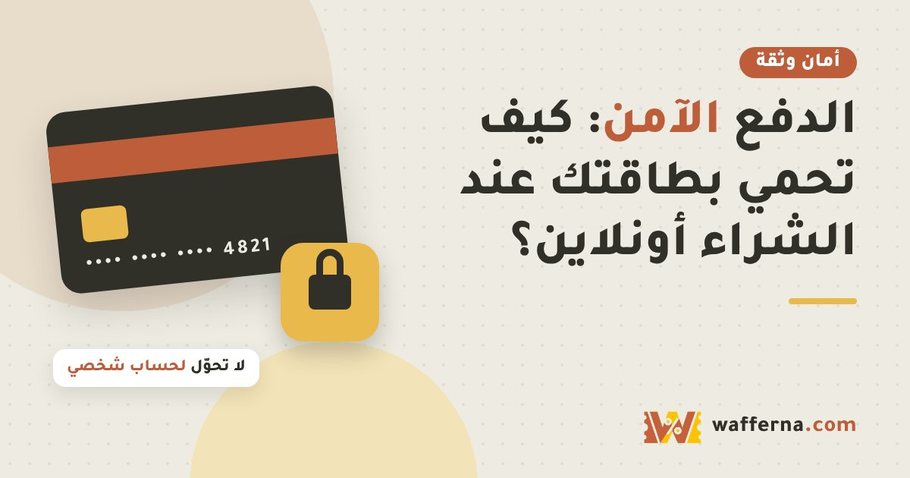

الدفع الآمن: كيف تحمي بطاقتك عند الشراء أونلاين

الدفع الإلكتروني آمن إذا التزمت بعادات بسيطة. أغلب حالات الاحتيال تبدأ من رابط مزيف أو رمز تحقق أُعطي لشخص غير مناسب.
عادات تحميك
- استخدم بطاقة بحد صرف منخفض أو بطاقة افتراضية إذا يوفرها بنكك للمشتريات الإلكترونية.
- فعّل إشعارات العمليات من تطبيق البنك.
- لا تشارك رمز التحقق (OTP) مع أي شخص، حتى لو ادّعى أنه من البنك.
- لا تدخل بيانات بطاقتك من رابط وصلك برسالة أو حساب غريب. افتح الموقع بنفسك.
- تجنب إدخال بيانات البطاقة على شبكات الواي فاي العامة.
- لا تحفظ بيانات بطاقتك في متاجر لا تثق فيها.
بعد الشراء
- راجع كشف الحساب والعمليات بعد الشراء.
- أبلغ البنك فوراً عند أي عملية لا تعرفها وأوقف البطاقة.
- احتفظ بإثبات الطلب ورقم العملية لأي نزاع محتمل.
وإذا كان المتجر جديداً عليك
إذا كان خيار الدفع عند الاستلام متوفراً مع متجر غير معروف، فهو أقل مخاطرة، مع التأكد من فحص الطلب عند التسليم حسب سياسة المتجر.
الخلاصة
القاعدة الذهبية: البنك لن يطلب منك رمز التحقق ولا الرقم السري ولا بيانات البطاقة عبر رسالة أو اتصال.
هذا المقال معلوماتي عام، ولا يحتوي على روابط تسويقية. الأسعار والأنظمة والمواعيد تتغير، فتأكد منها من المصدر الرسمي قبل أي قرار شراء.